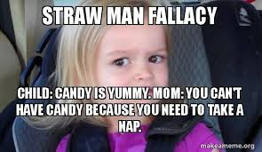

~A rookie's website for web-programming assignments :D~
⇨ How to Cope with Procrastination?
⇨ How to Recognize A Straw Man Logical Fallacy?
How to Recognize A Straw Man Logical Fallacy?
October 9, 2020
What is It?
A strawman is a fallacious argument that distorts an opposing stance in order to make it easier to attack.
Essentially, the person using the strawman pretends to attack their opponent’s stance, while in reality they are actually attacking a distorted version of that stance,
which their opponent doesn’t necessarily support.
For example, if someone says “I think that we should give better study guides to students”, a person using a strawman might reply by saying “I think that your idea is bad,
because we shouldn’t just give out easy A’s to everyone”.
Because strawman arguments are frequently used in discussions on various topics, it’s important to understand them. As such, in the following article you will learn more about
strawman arguments, see examples of how they are used, and understand what you can do in order to counter them successfully.
How A Strawman Works
In general, the use of a strawman consists of the following three stages:
- First, person A states their position.
- Then, person B presents a distorted version of person A’s original position, while pretending that there’s no difference between the two versions.
- Finally, person B attacks the distorted version of person A’s position, and acts as if this invalidates person A’s original argument.
Essentially, person B creates a strawman, which is a distorted version of their opponent’s original argument, which makes it easier for them to attack their opponent’s stance.
This means that there is a flaw in the premise of the strawman argument, since the stance that it addresses doesn’t accurately reflect the stance that it was originally meant to address. As such, the strawman fallacy is considered to be a type of an informal logical fallacy, and specifically a type of a relevance fallacy, since the person using it is attacking a stance that is not directly relevant to the discussion at hand.
Note that, in some cases, the use of the strawman might involve a slightly different process. For example, the person using the strawman might not present the distorted version of their opponent’s stance before attacking it, but will instead use an attack which simply addresses the distorted stance directly.
Examples of Strawman Arguments
The following is a typical example of a strawman argument:
- Teaching assistant: the homework assignment was much harder than we thought, so I think we should give a few extra points to students who completed it.
- Professor: that’s a terrible idea. If we give everyone a perfect score for no reason, students won’t bother working hard in the futur
In this example, the professor uses a strawman argument, by misrepresenting their assistant’s stance in three ways:
- The professor argues against giving everyone a bonus, while the teaching assistant suggested giving it only to students who completed the assignment.
- The professor argues against giving students a perfect score, while their assistant suggested giving students only a few extra points.
- The professor argues against giving students a bonus for no reason, while their assistant suggested giving them the bonus because the assignment was harder than expected.
In doing all of this, the professor makes it much easier for themself to attack their assistant’s stance.
Keep in mind that it doesn’t matter whether the overall claims of the professor who is using the strawman are true or not (i.e. that if everyone got a perfect score for no reason, then students won’t work hard in the future). This is because the professor’s argument is a fallacious misrepresentation of their opponent’s stance, meaning that it’s entirely irrelevant to the discussion in the first place.
Types of Strawman Arguments
There are countless ways to distort an opposing view when using a strawman. Common ways to do so include:
- Oversimplifying, generalizing, or exaggerating the opponent’s argument.
- Focusing on only a few specific aspects of an opponent’s argument.
- Quoting parts of the opponent’s argument out of context.
- Arguing against fringe or extreme opinions which are sometimes used in order to support the opponent’s stance, but which the opponent didn’t actually use.
In addition, there are various other ways in which people create strawman arguments, which can be as minor as changing small details in their opponent’s original statement, or as major as completely fabricating claims that their opponent has never made in the first place.
However, all of these techniques share one thing in common: they all involve someone distorting the opposing stance, in order to make it easier to attack.
As such, strawman arguments are relatively simple to recognize in discourse. Essentially, when you realize that there is a mismatch between someone’s stance and the stance that their opponent is attacking, it’s a clear sign that a strawman is being used. Nevertheless, in practice it can be sometimes difficult to notice or to be sure whether this type of argument has been used, especially if the person who is using the strawman knows what they’re doing.